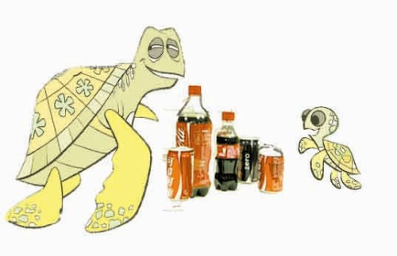

趣味五則之三
一、偏心
林太太有兩個兒子。她偏愛大兒子，討厭二兒子。
偏偏老大不喜歡讀書，一拿起書來不是偷偷玩他
的手機，就是喜歡將書往臉上一遮，呼呼地睡覺。
一天，老大裝著讀書的樣子睡著了，不巧就讓林太太瞧見了。林太太沾沾自喜地對二兒子說:「你看你的大哥，多用功，睡覺還拿著書本呢!」
老二當然沒敢說什麼，但也學乖了。於是有一次他讀書讀得很累了，也學著罷大哥的樣子，把書緊緊地掩蓋著面孔，才敢偷偷地睡去。不巧，這個舉動又讓林太太瞧見了。她馬上走過來．揪著他的耳朵說:「你這個懶惰虫，就是那樣沒出息，一沾書就想睡覺!」
二、疑神疑鬼
圖: 大龜和小龜在一起喝可樂

大龜和小龜在一起喝可樂。大龜喝完自己的一份後，請小龜幫它到外
面買可樂。小龜說：「你肯定是支我出去後，要把我部份的可樂喝掉!」大龜再三保證不會，虌心不甘，情不願出去。三小時過去了，虌仍未回來。龜想:「它肯定是躲在外面喝可樂，不回來了。我乾脆把它這一份喝了!」
大龜剛端起可樂，小龜突然推門而進，怒沖沖地說:「我早就知道你要喝我的可樂!我在外面監視你三小時了!」
三、努力以赴
勤勞的鳥兒，不會在天氣變冷的時候才去築巢，那將為時已晚，凜例的寒風會在它還沒有把巢築好的時候，就把它凍死。
勤勞的蜜蜂，不會在花朵凋謝的時候才去探蜜，那會太晚了，這時花粉會諷落在地上，最終它將會因為沒有食物而餓死。
靈巧的蜘蛛，不會在風雨來臨的時候才去織網，那會為時已晚，風雨會把它
辛勤的成果撕成粉碎，使它因此而無處安身。
聰明的小朋友，不要在該交作業的時候才去做作業，那會為時已晚，也不等考試日期近了才準備功課，這樣會讓你考試不及格，得到老師讚賞，且受到懲罰。
其實，一切都不難，只要你提前行動，你將從容地應對一切。如果鳥兒、蜜蜂、咖蛛、小孩都能儘快行動，都會快樂地生活，未雨綢繆，必定獲得人們的稱讚。
四、及時行動
有一個人的家，半夜裹遭了小偷潛入。這名小偷從屋頂爬進了房裡。
主人發現了小偷，想到:「我暫時不要做聲，看他怎麼樣?等他拿走東西，我才來對付他!」
想著想著，他竟然不知不覺地睡著了。
等主人醒來時，小偷已經走了。家裹值錢的東西也被小偷拿走了。
主人後悔沒有當場抓住小偷。
五、惹禍與恩惠
古代時期，一國王宴客，將軍甲是座上賓客。席上，國王把羊肉羹分給各位士大夫，卻因為不留意，沒把羹分給甲將軍。甲將軍心中憤怒，心想:「你國王不把我看在眼內，你等著瞧!」
後來，將軍甲到了鄰國，竟然慫恿鄰國攻打自己國家，帶兵向自己國家猛攻。不久，自己國家被攻破，國王倉皇逃命，卻有兩個勇士拿著戈使命跟隨國王。 ，
國王好奇地問:「其他人都逃跑了，為何你們不自作打算，還要跟隨我呢?」
他們兩回答:「大王，你以前曾賜給我們饑餓將死的父親一壺食。父親臨終前叮囑，如果國王若有危險，我們必須以死報答大王的恩德。」
國王感嘆萬分:「因為一杯羹而導致亡國，因為一壺食而得到二個壯土。」